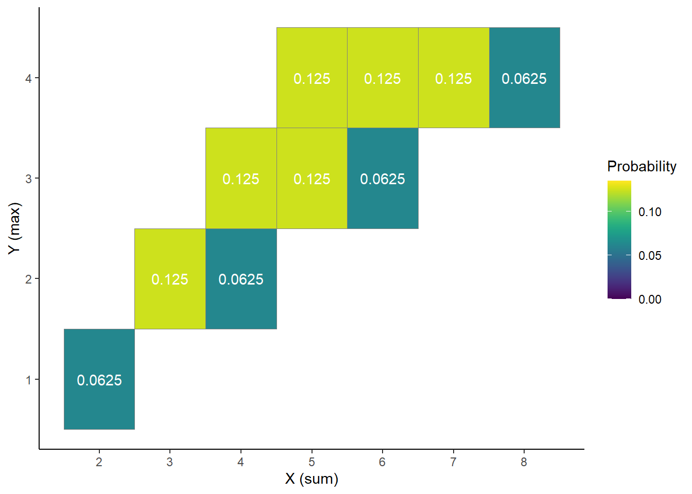

17 Joint and Conditional Distributions
- The joint distribution of random variables \(X\) and \(Y\) is a probability distribution on \((x, y)\) pairs, and describes how the values of \(X\) and \(Y\) vary together or jointly.
- Marginal distributions can be obtained from a joint distribution by “stacking”/“collapsing”/“aggregating” out the other variable.
- In general, marginal distributions alone are not enough to determine a joint distribution. (The exception is when random variables are independent.)
Example 17.1 Roll a fair four-sided die twice. Let \(X\) be the sum of the two dice, and let \(Y\) be the larger of the two rolls (or the common value if both rolls are the same). Recall Table 6.1.
- Compute and interpret \(p_{X, Y}(5, 3) = \text{P}(X = 5, Y = 3)\).
- Construct a “flat” table displaying the distribution of \((X, Y)\) pairs, with one pair in each row.
- Construct a two-way displaying the joint distribution on \(X\) and \(Y\).
| \(x\) \ \(y\) | 1 | 2 | 3 | 4 |
| 2 | 1/16 | 0 | 0 | 0 |
| 3 | 0 | 2/16 | 0 | 0 |
| 4 | 0 | 1/16 | 2/16 | 0 |
| 5 | 0 | 0 | 2/16 | 2/16 |
| 6 | 0 | 0 | 1/16 | 2/16 |
| 7 | 0 | 0 | 0 | 2/16 |
| 8 | 0 | 0 | 0 | 1/16 |
- The conditional distribution of \(Y\) given \(X=x\) is the distribution of \(Y\) values over only those outcomes for which \(X=x\). It is a distribution on values of \(Y\) only; treat \(x\) as a fixed constant when conditioning on the event \(\{X=x\}\).
- Conditional distributions can be obtained from a joint distribution by slicing and renormalizing. The conditional distribution of \(Y\) given \(X=x\), where \(x\) represents a particular number, can be thought of as:
- the slice of the joint distribution corresponding to \(X=x\), a distribution on values of \(Y\) alone with \(X=x\) fixed
- renormalized so that the slice accounts for 100% of the probability over the values of \(Y\)
- The shape of the conditional distribution of \(Y\) given \(X=\) is determined by the shape of the slice of the joint distribution over values of \(Y\) for the fixed \(x\).
- For each fixed \(x\), the conditional distribution of \(Y\) given \(X=x\) is a different distribution on values of the random variable \(Y\). There is not one “conditional distribution of \(Y\) given \(X\)”, but rather a family of conditional distributions of \(Y\) given different values of \(X\).
- Each conditional distribution is a distribution, so we can summarize its characteristics like mean and standard deviation. The conditional mean and standard deviation of \(Y\) given \(X=x\) represent, respectively, the long run average and variability of values of \(Y\) over only \((X, Y)\) pairs with \(X=x\).
- Since each value of \(x\) typically corresponds to a different conditional distribution of \(Y\) given \(X=x\), the conditional mean and standard deviation will typically be functions of \(x\).
Example 17.2 Continuing Example 17.1.
- Make a table representing the conditional distribution of \(X\) given \(Y=4\).
- Make a table representing the conditional distribution of \(X\) given \(Y=3\).
- Make a table representing the conditional distribution of \(X\) given \(Y=2\).
- Make a table representing the conditional distribution of \(X\) given \(Y=1\).

- The conditional expected value (a.k.a. conditional expectation a.k.a. conditional mean), of a random variable \(Y\) given the event \(\{X=x\}\), defined on a probability space with measure \(\text{P}\), is a number denoted \(\text{E}(Y|X=x)\) representing the probability-weighted average value of \(Y\), where the weights are determined by the conditional distribution of \(Y\) given \(X=x\). \[\begin{align*} & \text{Discrete $X, Y$ with conditional pmf $p_{Y|X}$:} & \text{E}(Y|X=x) & = \sum_y y p_{Y|X}(y|x)\\ \end{align*}\]
- Remember, when conditioning on \(X=x\), \(x\) is treated as a fixed constant. The conditional expected value \(\text{E}(Y | X=x)\) is a number representing the mean of the conditional distribution of \(Y\) given \(X=x\).
- The conditional expected value \(\text{E}(Y | X=x)\) is the long run average value of \(Y\) over only those outcomes for which \(X=x\).
- To approximate \(\text{E}(Y|X = x)\), simulate many \((X, Y)\) pairs, discard the pairs for which \(X\neq x\), and average the \(Y\) values for the pairs that remain.
Example 17.3 Continuing Example 17.2.
- Compute and interpret \(\text{E}(X | Y = 4)\).
- Without computing, will \(\text{E}(X | Y = 3)\) be greater than, less than, or equal to \(\text{E}(X | Y = 4)\)?
- The joint probability mass function (pmf) of two discrete random variables \((X,Y)\) defined on a probability space is the function defined by \[ p_{X,Y}(x,y) = \text{P}(X= x, Y= y) \qquad \text{ for all } x,y \]
- Remember to specify the possible \((x, y)\) pairs when defining a joint pmf.
Example 17.4 Let \(X\) be the number of home runs hit by the home team, and \(Y\) the number of home runs hit by the away team in a randomly selected Major League Baseball game. Suppose that \(X\) and \(Y\) have joint pmf
\[ p_{X, Y}(x, y) = \begin{cases} e^{-2.4}\frac{1.21^{x}1.19^{y}}{x!y!}, & x = 0, 1, 2, \ldots; y = 0, 1, 2, \ldots,\\ 0, & \text{otherwise.} \end{cases} \]
- Compute and interpret \(\text{P}(X = 2, Y = 1)\).
- Construct a two-way table representation of the joint pmf (you can use software or a spreadsheet).
- Compute and interpret \(\text{P}(X \le 3, Y \le 3)\).
- Compute and interpret \(\text{P}(X + Y = 3)\).
- Compute and interpret \(\text{P}(X = Y)\).
- Compute and interpret \(\text{P}(X = 2)\).
- Compute and interpret \(\text{P}(Y = 1)\).
- Two random variables \(X\) and \(Y\) defined on a probability space with probability measure \(\text{P}\) are independent if \(\text{P}(X\le x, Y\le y) = \text{P}(X\le x)\text{P}(Y\le y)\) for all \(x, y\). That is, two random variables are independent if their joint cdf is the product of their marginal cdfs.
- Random variables \(X\) and \(Y\) are independent if and only if the joint distribution factors into the product of the marginal distributions. The definition is in terms of cdfs, but analogous statements are true for pmfs and pdfs. \[\begin{align*} \text{Discrete RVs $X$ and $Y$} & \text{ are independent}\\ \Longleftrightarrow p_{X,Y}(x,y) & = p_X(x)p_Y(y) & & \text{for all $x, y$} \end{align*}\] \[\begin{align*} \text{Continuous RVs $X$ and $Y$} & \text{ are independent}\\ \Longleftrightarrow f_{X,Y}(x,y) & = f_X(x)f_Y(y) & & \text{for all $x,y$} \end{align*}\]
17.1 Exercises
Exercise 17.1 Continuing Example 17.1.
- Starting with the two-way table representing the joint distribution of \(X\) and \(Y\), how could you obtain \(\text{P}(X = 5)\)?
- Starting with the two-way table, how could you obtain the marginal distribution of \(X\)? of \(Y\)?
- Starting with the marginal distribution of \(X\) and the marginal distribution of \(Y\), could you necessarily construct the two-way table of the joint distribution? Explain.
- Remember that you constructed a spinner corresponding to the marginal distribution of \(Y\) in Example 6.1. Suppose you also construct a separate spinner corresponding to the marginal distribution of \(X\). Donny Don’t says: “to simulate an \((X, Y)\) pair I can just spin the \(X\) spinner once to get \(X\) and spin the \(Y\) spinner once to get \(Y\).” Do you agree? Explain.
- Recall that we can obtain marginal distributions from a joint distribution.
- Marginal pmfs are determined by the joint pmf via the law of total probability.
- If we imagine a plot with blocks whose heights represent the joint probabilities, the marginal probability of a particular value of one variable can be obtained by “stacking” all the blocks corresponding to that value.
- For discrete random variables \(X\) and \(Y\): \[\begin{align*} p_X(x) & = \sum_y p_{X,Y}(x,y) & & \text{a function of $x$ only} \\ p_Y(y) & = \sum_x p_{X,Y}(x,y) & & \text{a function of $y$ only} \\ \end{align*}\]
Exercise 17.2 Continuing Exercise 17.1.
- Construct a spinner that could be used to simulate \((X, Y)\) pairs with the proper joint distribution.
- How could you use Example 17.2 to construct a series of spinners to simulate \((X, Y)\) pairs with the proper joint distribution? (Hint: consider simulating \(Y\) first; then how would you simulate \(X\)?)
- Explain how you could use simulation to approximate the conditional distribution of \(Y\) given \(X = 6\).
- Explain how you could use simulation to approximate \(\text{E}(Y | X = 6)\).
- Rather than directly simulating from a joint distribution, we can simulate an \((X, Y)\) pair in two stages:
- Simulate a value of \(X\) from its marginal distribution. Call the simulated value \(x\).
- Given \(x\), simulate a value of \(Y\) from the conditional distribution of \(Y\) given \(X = x\). There will be a different distribution (spinner) for each possible value of \(x\).
- This “marginal then conditional” process is essentially implementing the multiplication rule \[ \text{joint} = \text{conditional}\times\text{marginal} \]
- In many problems a joint distribution is naturally described by specifying the marginal distribution of \(X\) and the family of conditional distributions of \(Y\) given values of \(X\). (This is sometimes called a “hierarchical model”.)